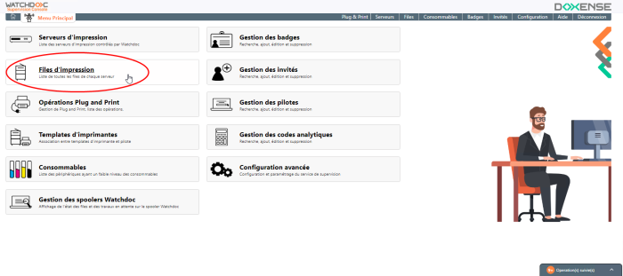
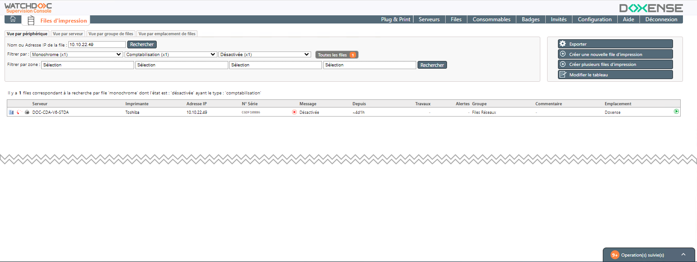
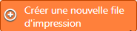
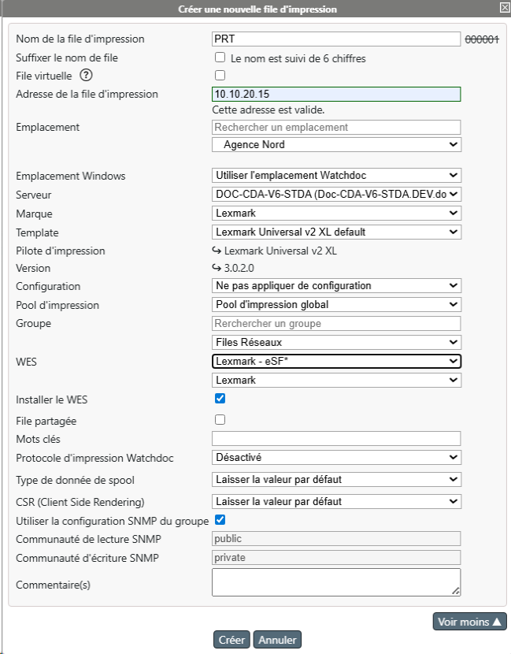
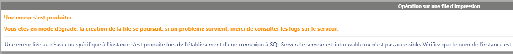
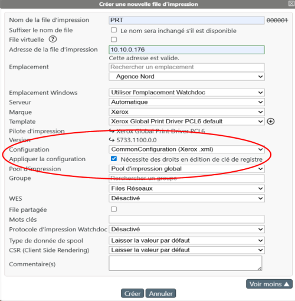
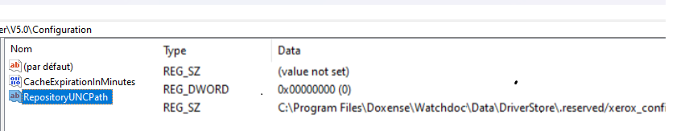

Principe
Dans WSC, vous pouvez créer une file d'impression ex-nihilo..
Pour créer une file ex-nihilo, il est nécessaire d'avoir ajouté un pilote (driver) adapté à la file au préalable.
Procédure
Accéder à l'interface de création de files
-
Depuis le Menu principal de WSC, cliquez sur bouton Files d'impression :

-
Vous accédez à l'interface de gestion Files d'impression :

{kind=link}
Créer la file
-
Dans l'interface Files d'impression, dans l'encart de droite, cliquez sur le bouton

-
dans la boîte Créer une nouvelle file d'impression, complétez les champs suivants :
-
Nom de la file d'impression : saisissez le nom de la file ;
-
Adresse de la file d'impression : saisissez l'adresse (FQDN ou IP) qui est vérifiée immédiatement ;
-
Emplacement : dans la liste hiérarchique, sélectionnez l'emplacement auquel vous souhaitez associer cette file (cf. Gérer les emplacements).
-
Serveur :dans la liste, sélectionnez le serveur dont dépend la file d'impression.
Le choix de la valeur "Automatique" déclenche le comportement suivant :-
si le serveur est le seul de la configuration (configuration StandAlone), la file dépend nécessairement de ce serveur ;
-
si le serveur appartient à un domaine (configuration master/slaves), Watchdoc déduit l'emplacement du périphérique d'impression grâce à son adresse IP et aux informations de configuration de sous-réseaux des emplacements. Il compare ensuite l'adresse IP de chaque serveur avec celle des emplacements pour établir la correspondance avec le serveur dont l'adresse IP correspond.
Si aucun serveur ne dispose d'adresse IP correspondante, Watchdoc renvoie la file vers le serveur qui gère le moins de files.
-
-
Marque : dans la liste, sélectionnez la marque de la file créée ;
-
Template: dans la liste, sélectionnez le Template associé à la file créée : dès qu'un template est sélectionné, le pilote et la version sont inidiqués. Si vous ne trouvez pas le template souhaité, cliquez sur le bouton pour accéder à l'interface de gestion de templates et l'y ajouter.
-
-
Cliquez sur Créer si les éléments présents dans le formulaire suffisent à la création de votre file d'impression.
-
Si vous souhaitez détailler la file créée, cliquez sur Voir plus pour compléter la description :
- Configuration : indiquez le nom d'un fichier de configuration (.dat) téléchargé préalablement. La file créée sera alors configurée de la même manière que la file à partir de laquelle a été téléchargé le fichier de configuration (cf. Télécharger la configuration).
- Pool d'impression : précisez le pool d'impression dans lequel vous souhaitez intégrer la files créée ;
- Groupe : dans la liste, sélectionnez le groupe de files (réseau, virtuelles, universelles, etc.) dans lequel vous souhaitez intégrer la file créée ;
-
WES : dans la liste, sélectionnez la marque du WES que vous souhaitez installer, puis le WES que vous souhaitez appliquer sur la file créée ;
-
Installer le WES : cochez cette case pour lancer l'installation du WES.
Attention : si le WES est déjà installé et que vous souhaitez le réinstaller, procédez d'abord à sa désinstallation dans Watchdoc. Dans le cas contraire, des anomalies peuvent survenir. -
File partagée
 File d'impression générée par défaut par l'assistant lors de l'installation du périphérique d'impression réseau. Cette file ne dépend pas de Watchdoc. Elle a pour fonction de générer le spool correspondant aux travaux d'impression envoyés au périphérique./publiée : cochez la case si la file doit être partagée ;
File d'impression générée par défaut par l'assistant lors de l'installation du périphérique d'impression réseau. Cette file ne dépend pas de Watchdoc. Elle a pour fonction de générer le spool correspondant aux travaux d'impression envoyés au périphérique./publiée : cochez la case si la file doit être partagée ; -
Mots clés : saisissez un ou plusieurs mots clés associés à la file (peut servir comme critère de sélection ou de tri par la suite).
-
Protocole d'impression Watchdoc : sélectionnez ici le protocole que vous souhaitez appliquer à la file :
-
Type de données de spool :
- EMF Enhanced Metafile (ou EMF) est un format d'image numérique pour les systèmes Microsoft Windows et certains pilotes d'impression. Il s'agit d'une amélioration du type de fichier image de type WMF (Windows Metafile) avec des données codées sur 32 bits pour une meilleure qualité. : attention : l'activation de ce type sur une file virtuelle peut en limiter les fonctionnalités (notamment sur les spools en XPS XML Paper Specification (XPS) est un langage de description de page, développé par Microsoft, destiné à concurrencer en partie le PDF pour la description de documents fixes et destinés à l'archivage et à l'impression.
Le format permet d'intégrer des données vectorielles 2D et des polices de caractères, ainsi que des informations pour la protection du document par DRM.
(Source : Wikipedia) pour lesquels la transformation de spools est désactivée, par exemple).
- RAW "Raw" signifie "brut" en anglais. En impression, il désigne un format de fichier pour les images numériques. Il ne s'agit pas d'un format standard, mais d'un type de fichier créé par des dispositifs tels que les appareils photo numériques ou les scanners et caractérisé par le fait de n'avoir subi que peu de traitement informatique, proche, donc du format natif. :
- EMF
- CSR Client Side Rendering. Dans une infrastructure Client/serveur, le Client-side rendering est la prise en charge du spool par le poste client et non par le serveur. Le poste client envoie donc au serveur un fichier de spool finalisé. : indiquez si vous souhaitez activer CSR sur la file
- forcé :
- désactivé :
-
SNMP
Simple Network Management Protocol (Protocole Simple de Gestion de Réseau) est un protocole de communication qui permet aux administrateurs réseau de gérer les équipements du réseau, de superviser et de diagnostiquer des problèmes réseaux et matériels à distance.
(Source : Wikipedia) : si vous avez activé le monitoring SNMP, complétez-en la configuration : -
Configuration du groupe : cochez la case si la file appartient à un groupe de files et que la configuration du groupe s'applique à la file. Dans ce cas, il n'est pas nécessaire de configurer le SNMP pour la file.
Décochez la case pour configurer spécifiquement la file et indiquez :
-
Communauté de lecture : indiquez l'identifiant correspondant à la Communauté de lecture ;
-
Communauté d'écriture: indiquez l'identifiant correspondant à la Communauté d'écriture.
Par défaut, la valeur de communauté est public ou private.Pour des raisons de sécurité, nous vous recommandons de changer ces valeurs.
N.B. ; le SNMP v.3 peut être configuré dans Watchdoc uniquement.
-
-
- Commentaire(s) : si nécessaire, fournissez des informations supplémentaires relatives à la file :

N.B. : en cas de dysfonctionnement, Watchdoc et WSC peuvent fonctionner en mode dégradé, Dans ce cas, certaines opérations peuvent être poursuivies en mode dégradé. Un message vous en informe :

Cas spécifique d'une file Xerox®
Pour configurer une file d'impression Xerox® dans WSC, il convient de disposer du fichier de configuration propre au pilote et à la file Xerox®.
Ce fichier de configuration (CommonConfiguration.xml), est généré à l'aide de l'outil Xerox® Print Configuration Tool (cf. https://www.office.xerox.com/latest/SFTHT-01U.PDF pour la version 2025 ou recherchez "Print Configuration Tool" sur https://www.office.xerox.com).
Collez ce fichier de configuration sur le serveur hébergeant WSC ou dans un dossier accessible depuis WSC pour pouvoir l'exploiter lors de la création d'une file d'impression.
Pour ajouter une file Xerox, dans la boîte Créer une nouvelle file d'impression ;
-
complétez les premiers champs comme pour une autre file (cf. procédure ci-dessus) ;
-
cliquez sur Voir plus pour compléter la description et complétez les champs suivants :
- Configuration : sélectionnez le nom du fichier de configuration généré préalablement à l'aide de Xerox® Print Configuration Tool (CommonConfiguration.xml).
- Appliquer la configuration : à partir de la version 6.1.0.5290, cochez la case si vous souhaitez appliquer le fichier de configuration.
Dans ce cas, un message vous informe que le compte nécessite des droits d'édition sur une clé de registre.
Une clé de registre intitulée RepositoryUNCpath contenant le chemin d'accès au fichier de configuration est créée dans HKEY_LOCAL_MACHINE\Software\Xerox\PrinterDriver\V5.0
Si vous ne souhaitez pas autoriser l'accès à la base de registre ou si le compte de service Watchdoc ne dispose pas des droits suffisants, la configuration de la clé de registre échoue. Dans ce cas, il est nécessaire :- soit d'autoriser au compte de service Watchdoc le droit d'édition sur la clé de registre ;
- soit de modifier la clé de registre à l'aide d'un autre compte de service autorisé :

Configurer la file d'impression
-
Une fois la file d'impression ajoutée, accédez au serveur d'impression en tant qu'administrateur ;
-
lancez le gestionnaire d'impression Microsoft Windows® (Print Management) ;
-
depuis le gestionnaire, sélectionnez le périphérique correspondant à la file d'impression créée (la version du périphérique et non pas la version"Shadow" du périphérique) ;
-
cliquez-droit pour accéder aux propriétés du périphérique d'impression, puis aux paramètres d'impression (options, préférences, paramètres, selon les modèles) ;
-
définissez précisément tous les paramètres d'impression de ce périphérique (couleur ou noir et blanc, recto ou recto-verso, format, etc.) en fonction des paramètres souhaités ;
-
appliquez puis enregistrez les propriétés du périphérique d'impression.